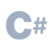

Build your own Shell
Learn about parsing shell commands, executing programs and more
Resume Building

Build your own Shell is free this May.
The core challenge experience is completely free this month. If you'd like to enjoy advanced features such as running turbo tests or unlimited code examples, you'll need a membership.
A shell is the program that interprets what you type into the terminal. It reads your commands, runs programs, and prints their output. Popular examples are Bash and ZSH.
In this challenge, you'll build your own shell from scratch.
Your shell will run a REPL, parse commands, spawn processes, and more.
What exactly will I build?
What exactly will I learn?
Why should I build such a project?
What are the pre-requisites for this challenge?
Stages
Print a prompt
Handle invalid commands
Implement a REPL
Implement exit
Implement echo
Implement type
Locate executable files
Run a program
Navigation
The pwd builtin
The cd builtin: Absolute paths
The cd builtin: Relative paths
The cd builtin: Home directory
Quoting
Single quotes
Double quotes
Backslash outside quotes
Backslash within single quotes
Backslash within double quotes
Executing a quoted executable
Redirection
Redirect stdout
Redirect stderr
Append stdout
Append stderr
Command Completion
Builtin completion
Completion with arguments
Missing completions
Executable completion
Multiple completions
Partial completions
Filename Completion
File completion
Nested file completion
Directory completion
Missing completions
Multiple matches
Partial completions
Multi-argument completions
Programmable Completion
Register complete builtin
Printing missing specifications
Displaying registered specifications
Single completion
Handling no completions
Passing command-line arguments
Passing environment variables
Multiple completer candidates
Longest common prefix
Unregister a completion
Background Jobs
The jobs builtin
Starting background jobs
Printing background job output
List a single job
List multiple jobs
Reap one job
Reap multiple jobs
Reap before the next prompt
Recycle job numbers
Pipelines
Dual-command pipeline
Pipelines with built-ins
Multi-command pipelines
History
The history builtin
Listing history
Limiting history entries
Up-arrow navigation
Down-arrow navigation
Executing commands from history
History Persistence
Read history from file
Write history to file
Append history to file
Read history on startup
Write history on exit
Append history on exit
Parameter Expansion
The declare builtin
Printing missing variables
Storing shell variables
Validating variable names
Expanding variables
Expansion with braces
Expanding empty variables

“
There are few sites I like as much that have a step by step guide. The real-time feedback is so good, it's creepy!
Ananthalakshmi Sankar
Automation Engineer at Apple
“
I think the instant feedback right there in the git push is really cool.
Didn't even know that was possible!
Patrick Burris
Senior Software Developer, CenturyLink